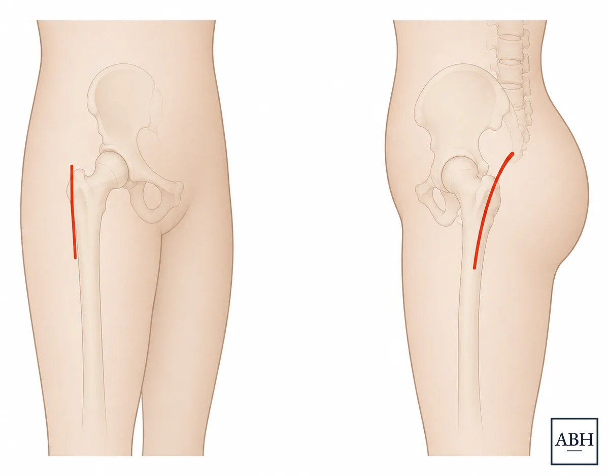
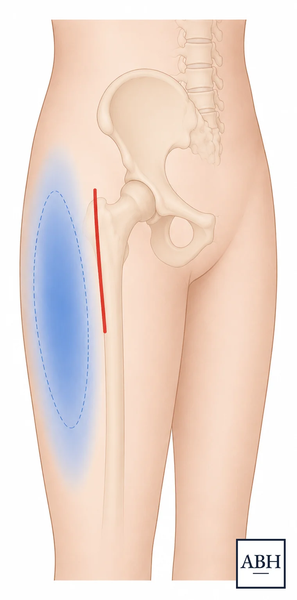

An explanation of modern anterior approach hip replacement surgery for patients and other healthcare providers
The hip is a ball-and-socket joint. When the smooth cartilage lining the joint wears away, most often from osteoarthritis, bone begins to rub on bone, which typically causes pain, stiffness, and a narrowing range of activity. A hip replacement removes the worn ball and socket and replaces them with implants sized and positioned to recreate a patient’s own anatomy.
Hip replacement is generally regarded as one of the more reliable operations in orthopaedic surgery. For most patients it means substantial pain relief and a return to walking, cycling, golf, travel, and daily life without thinking much about the hip. Dr. Harris plans each operation from the patient’s own imaging and uses robotic assistance and computer navigation to position the new joint precisely.
A hip replacement is rarely something a patient absolutely “needs”. It is an elective operation. The right time is generally when the joint limits the patient’s life, non-surgical care is no longer enough, and the patient decides they are ready.
The direct anterior approach reaches the hip from the front of the leg, working in the natural interval between muscles. It is the approach Dr. Harris uses for most (but not all) total hip replacements.

When a patient’s anatomy suits it, the incision can follow the natural crease of the skin, sometimes called a “bikini incision,” which leaves a lower and more discreet scar. Whether that is a good option in a particular case, and the risks and benefits either way, can be discussed as they relate to your particular case.
Patients sometimes arrive believing that an anterior hip replacement is a smaller operation. It is not necessarily. The approach describes the path taken to reach the joint. The operation itself is the same one: the worn ball and socket are removed and the same implants are placed. The bone work, the implants, and the healing that follows are not different because of the approach.
A small sensory nerve runs near the front of the hip and can be irritated during an anterior approach. When that happens, patients typically notice a patch of numbness, tingling, or altered sensation over the outer part of the thigh. It is purely a sensation issue. It does not affect strength, walking, or how the hip works.1

For most patients this improves over the months after surgery, and in many it resolves completely.1
Many patients who have an anterior hip replacement are able to go home the same day when they are a good candidate for it. Whether that makes sense generally depends on overall health, what other medical conditions are present, and what support is available at home. It is planned in advance rather than decided on the day of surgery, and staying overnight is a perfectly reasonable outcome when it is the safer choice.
Two things in particular can point toward one approach over another.
Prior hip surgery or hardware. Previous incisions, plates or screws from an old fracture, or earlier surgery around the hip change what can be reached safely and what has to be worked around. That history often shapes the plan more than anything else does.
The condition of the skin and soft tissue. Where the incision will sit, what the skin in that area looks like, and how well it is likely to heal all factor in. Choosing the approach that gives the best healing potential for a particular patient matters more than the label on the technique.
Other details of anatomy and imaging are reviewed as well. Dr. Harris goes through the reasoning for whichever approach is being considered.
This is worth answering directly, because patients may read a great deal online suggesting one approach is decisively better than the others.
Some studies have found an advantage for the anterior approach in early recovery.2 That finding is not the whole picture. Compared directly against the STAR approach, a modern posterior-based technique, gait recovery at six weeks has been essentially the same.3 Dislocation rates across these comparisons have generally been similar as well.2
What does appear to matter is how routinely a surgeon performs the approach they are using. In a population study of anterior hip replacements, complication rates were higher among surgeons doing the procedure occasionally and settled once volume was higher.4
Dr. Harris performs both the direct anterior approach and the STAR approach, a modern muscle-sparing posterior-based technique he trained in at the Hospital for Special Surgery. The right approach for a given patient depends on that patient’s anatomy, imaging, and history rather than on a single-technique philosophy.
Recovery after an anterior hip replacement follows the same general pattern as after a hip replacement done through another approach. The hip replacement recovery guide covers the timeline in detail.
It is a total hip replacement performed through the front of the leg, working in the interval between muscles rather than detaching them. The implants and the operation are the same as in a hip replacement done through another approach. What differs is the path used to reach the joint.
No. The approach describes how the surgeon reaches the hip. The worn ball and socket are still removed and the same implants are still placed. It is not a smaller or lesser operation, and the healing that follows is not shortened because of the approach.
Some studies have found an advantage for the anterior approach in early recovery. That is not the whole picture. Compared directly against the STAR approach, a modern posterior-based technique, gait recovery at six weeks has been essentially the same, and dislocation rates have generally been similar. How routinely a surgeon performs the approach they use appears to matter more than which approach it is. Dr. Harris performs both.
Some patients do. A small sensory nerve near the front of the hip can be irritated during an anterior approach, which can cause numbness or tingling over the outer thigh. It affects sensation only, not strength or how the hip works, and it generally improves over the months after surgery.
It depends on anatomy. When a patient’s anatomy suits it, the incision can follow the natural crease of the skin, which leaves a lower and more discreet scar. The risks and benefits for a specific case can be discussed at a visit.
Often, yes. Many patients go home the same day when they are a good candidate. It depends on overall health, other medical conditions, and support at home, and it is planned in advance.
Prior surgery or hardware around the hip, and the condition of the skin and soft tissue where the incision would sit, are two of the things that can point toward a different approach. Anatomy and imaging are reviewed in each case.
Sometimes. It depends on what is being revised. The anterior approach works well for some revisions, particularly more limited ones, while larger reconstructions often call for a different or more extensile approach. What was done at the first operation, including where the previous incision sits, factors in as well.
Yes. Each operation is planned from the patient’s own imaging, and robotic assistance and computer navigation are used to position the implants.
Most patients are up and walking with assistance the day of surgery, and most of the improvement happens over the first two to three months, with gains continuing past that. Recovery follows the same general pattern regardless of approach. The hip replacement recovery guide covers the timeline in detail.
The right approach depends on your anatomy, your imaging, and your history. Dr. Harris reviews each case individually and explains the options and the reasoning behind them. Send a message.